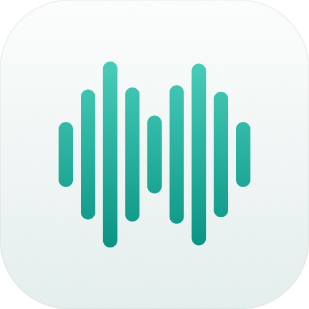
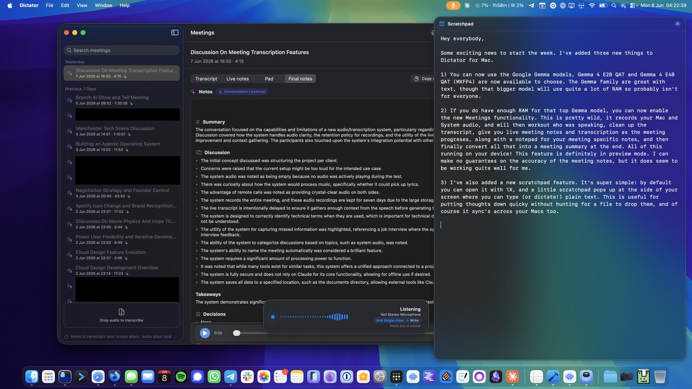
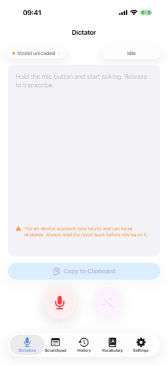
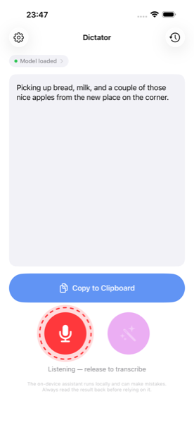
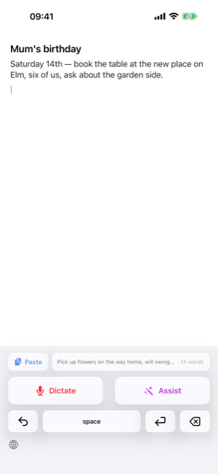
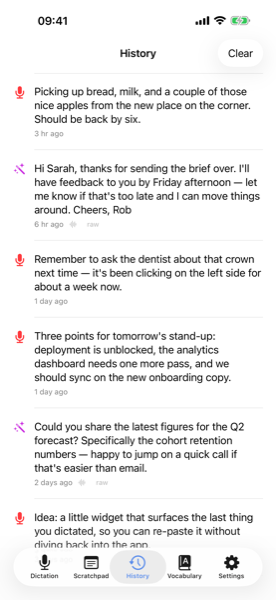

Talk to your Mac.
Not the cloud.
A free, open-source local-first dictation app for the Mac. Hold a hotkey, speak, release — and the text lands wherever your cursor is. Transcription and language models run entirely on-device.
Latest macOS release: v2026.8.0 · All releases
- Fully on-device
- Any text field, any app
- Context-aware
- Custom modes, per app
- Multi-turn assistant
- Meetings (separate app)
- Floating scratchpad
- Free & open source
Active development. Things may still be rough in spots, and some behaviour will change between versions. Feedback (bugs, papercuts, "this should do X") is genuinely welcome at hello@robgough.net.
Talking to yourself.
No cloud.
A dictation keyboard for iPhone. Tap once to dictate, tap again to reshape what's already there with a spoken instruction. Transcription runs on the Apple Neural Engine; the cleanup pass uses Apple Intelligence. Nothing leaves the device.
- Fully on-device
- System keyboard
- Dictate & Assist
- Apple Neural Engine
- ~460 MB total
Out now on the App Store. Spotted a bug or a papercut? Email hello@robgough.net — feedback is genuinely welcome.
Two hotkeys
Two hotkeys, two jobs. Dictation drops new text where the cursor is. Assistant edits the text that's already there.
You bind each hotkey in Settings — typically a Fn key for dictation, a different chord for assistant. The menu-bar HUD tells you which one is live while you hold the key, and which pipeline stage it's currently working on.
Dictation
Hold the dictation hotkey, speak, release — the transcript (plus any cleanup passes you've enabled) lands at your cursor. Works in any text field, in any app. The next section walks through the pipeline.
Assistant
A separate hotkey, optionally with text selected. Speak an instruction — Dictator either replaces the selection in place ("tighten this") or drafts something new to the clipboard ("reply with a polite no").
The pipeline
From audio to written text — and the cleanup that makes it readable — all on your Mac.
Most dictation apps either stop at the raw transcript or send it through a paid cloud LLM to clean it up. Dictator runs the whole pipeline locally, and every language-model pass after the transcription has a deterministic safety net: if the model drifts beyond a measurable threshold, that pass reverts. Click any stage below to see what happens there.
The cleanup passes (Format, Grammar, Structure) are the kind of feature most dictation apps charge a subscription for. Here they're included, local, and inspectable.
Dictation modes
Not every dictation needs the same amount of cleanup. Each mode picks a style — how much the AI is allowed to touch — and you can add your own modes for the contexts you reach for.
A style controls the shape of the output; a mode pairs a style with its own extra instructions, spoken-cue settings, and an "auto-activate for these apps" list. Fresh installs seed four modes — Quick, Standard, Polished, and Messages — and you can duplicate or add more from Settings.
Raw
No AI pass at all. Spoken cues ("comma", "new paragraph", "fire emoji") and your vocabulary substitutions still apply, so it's not literally unprocessed — just the fastest path from speech to pasted text. Quick mode uses this style.
Polished
Punctuation, grammar, and structure, all cleaned up — hesitation fillers and false starts dropped by default. The most AI touches a transcript gets.
Between those two sit Clean (punctuation and formatting, lighter-touch than Polished) and Messages (casual register kept, no trailing full stop on short one-liners, never invents a greeting or sign-off — built for chat apps). Custom drops the built-in styles entirely and runs a prompt you write yourself. Every built-in style shares one set of prompts, so improvements reach every mode that uses it automatically; a mode's own Extra instructions box layers your tweaks on top without forking the whole prompt.
Long dictations (roughly 60 words and up) get paragraph breaks automatically — the AI only chooses where to break, it can't reword a single line — and very long ones are chunked so the ending doesn't get truncated or quietly summarised.
Cycle the active mode mid-recording with a key (Tab by default) — start in Polished, decide partway through it should've been Raw, tap once and the rest of the recording switches. Modes can also auto-activate based on the focused app: bind a Slack mode to Slack, an Email mode to Mail.app, and Dictator picks the right one as you start to record.
Context awareness
Both hotkeys can see a little of the text around your cursor — read through the same Accessibility access used for pasting — so what Dictator writes fits what's already on the page.
When you start a dictation or trigger the assistant, Dictator takes a quick, read-only look at the text either side of the insertion point or selection, and mines the distinctive names and terms from a wider sweep of the document. None of it is transcribed or stored; it's handed to the local model purely as context for that one run, then discarded.
When you dictate
Names and terminology come out spelled the way the rest of your document spells them — an accented name like Siobhán is restored even when speech recognition drops the accent. And dictating into the middle of a sentence joins cleanly: the leading space, capitalisation, and trailing full stop adapt to exactly where the caret sits, instead of a stray capital or a doubled space.
When you ask the assistant
The assistant sees what surrounds your selection too, so "reply to this" knows which message you mean and "make a list here" knows what the document is about — and it spells names and terms to match. Always on whenever Accessibility can read the app.
Assistant mode
A second hotkey for editing text by speaking to it.
Hold the assistant hotkey, speak an instruction, release. If you had text selected when you triggered it, Dictator sees both — the selection and the instruction — and the local LLM decides what kind of response you want.
Replace
"Tighten this." "Translate to French." "Fix the comma splice." The selection is replaced in place — and Dictator re-selects the new text so you can iterate ("now make it shorter") without reaching for the mouse.
Draft
"Reply to this with a polite no." "Summarise these notes." "Draft an email about X." The result lands on the clipboard, or in a small floating window you can read and copy from when there's nowhere obvious to paste.
Conversations are multi-turn: follow-ups extend the same thread, with automatic compaction once the model's context window starts filling. Recent conversations are one click away in the menu-bar dropdown.

Dictator Meetings
Record a call, get a transcript split by speaker, and have the notes written for you — all on-device, in its own app.
Dictator Meetings is a separate download: a windowed companion app for recording calls and writing them up. Start a recording and it captures both sides — your microphone and the call audio itself, whatever app the call is in — transcribes and diarizes locally, and writes clean Markdown notes (summary, discussion, decisions, action items with owners) when it ends. It shares Dictator's already-loaded language model where it can, so running both apps doesn't mean holding two copies in memory.
Latest release: v2026.9.0 · All releases
Notes can be written by a model of your choice — Dictator's shared model or a local model of its own by default, or Apple's on-device model — and, only if you configure one, a cloud provider (OpenAI, OpenRouter, or Anthropic) for either the live or final pass. Cloud providers are opt-in per notes step: transcripts only leave your Mac when you deliberately pick one, and API keys are kept in the macOS Keychain, never written into synced settings.
Scratchpad
A blank note, one keystroke away. Press a shortcut (⌥X by default) and a plain-text pad slides in from the edge of the screen; press it again, hit Esc, or click away and it slides back out.
It's for the thought you need to get down now — a phone number, a half-formed idea, something pasted out of a call — without hunting for a window or a file to put it in. The pad floats above everything and follows you between Spaces, and because it takes your typing without pulling focus from the app underneath, you can jot into it without losing your place in whatever you were doing. You can dictate straight into it, too.

There's just one pad, kept as scratchpad.md alongside your other settings. If that folder syncs through iCloud Drive it rides along to your other Macs, so the note you started on the laptop is there on the desktop. Width is up to you (Small, Medium, or Large), and the shortcut, width, and an on/off toggle live in Settings → General.
Choose your models
Two engines for speech-to-text, six small instruction-tuned LLMs for the cleanup passes — or no LLM at all.
All weights are downloaded on first use and stored in ~/Library/Application Support/Dictator/Models/. You can mix and match: smaller transcription model with a bigger LLM, or vice versa.
Speech-to-text
| Model | Disk | RAM | Notes |
|---|---|---|---|
| Whisper Tiny (English) | 75 MB | ~150 MB | Fastest, lowest accuracy. |
| Whisper Base (English) | 140 MB | ~250 MB | Good balance for short utterances. |
| Whisper Small (English) | 470 MB | ~700 MB | Solid accuracy. The default if you switch the engine to Whisper. |
| Whisper Large v3 Turbo | 1.5 GB | ~2 GB | Best quality, multilingual. |
| Parakeet TDT v3 (multilingual) | 475 MB | ~700 MB | Default. Runs on the Apple Neural Engine. ~60–70× realtime. 25 European languages. |
| Parakeet TDT v2 (English) | 475 MB | ~700 MB | Slightly better English accuracy than v3. |
Language model — used for the cleanup passes and Assistant mode
By default — when Apple Intelligence is enabled — Dictator routes its language-model passes through Apple's on-device foundation model. It's shared with Apple Intelligence (system-resident), so the in-process RAM cost is effectively zero and there's no per-app language-model download. The MLX models listed below are an alternative if you'd rather pick a specific model, or aren't using Apple Intelligence; the RAM tiers and table on the rest of this section refer to them.
16 GB Minimum
Default is Llama 3.2 1B. Comfortable with the 1B model and the full pipeline running; the 3B works if Dictator is the only memory-hungry app open at the time.
24 GB Recommended
Default is Llama 3.2 3B. Plenty of headroom for the full setup, with room left for everything else you'd usually have open. Gemma 4 E2B also fits comfortably if you want a quality step up.
32 GB+ Generous
Comfortable with Gemma 4 E4B — the highest-quality model Dictator offers — or Qwen 2.5 7B, with zero swap pressure even with a long Assistant-mode conversation in flight.
| Model | Disk | RAM | Min Mac RAM | Notes |
|---|---|---|---|---|
| Llama 3.2 1B (4-bit) | 760 MB | ~1.5 GB | 16 GB | Snappy. Decent formatting; weaker on grammar and Assistant tasks. |
| Llama 3.2 3B (4-bit) | 1.9 GB | ~2.5 GB | 24 GB | Recommended on 24 GB+. Good balance of quality and speed. |
| Qwen 2.5 3B (4-bit) | 1.8 GB | ~2.5 GB | 24 GB | Alternative 3B with a different prose style. |
| Qwen 2.5 7B (4-bit) | 4.4 GB | ~5–6 GB | 32 GB | Higher quality output, noticeably slower. Plan for 32 GB. |
| Gemma 4 E2B (QAT 4-bit) | 4.4 GB | ~4 GB | 24 GB | Google's latest, derived from Gemini 3. Strong for its size — the download includes vision towers that are dropped at load, so it runs lighter than the file size suggests. |
| Gemma 4 E4B (QAT MXFP4) | 6.7 GB | ~6 GB | 32 GB | The best-quality model Dictator offers. Same Gemini 3 lineage as the E2B, with more effective parameters. Also the model Dictator Meetings recommends for local notes. |
| None | — | — | — | Disables every LLM pass. Raw transcript ships through (dictionary substitution still applies). Pick this if you prefer Whisper's output straight, or want zero LLM overhead. |
All language models are 4-bit quantised via MLX; the Gemma 4 pair are Google's quantisation-aware-trained releases, which hold up noticeably better at 4-bit than post-training quants. The RAM column is how much the loaded model itself consumes at steady-state, with modest context lengths; long Assistant-mode conversations grow as the KV cache fills. The Min Mac RAM column is the total physical memory we'd want your whole machine to have before recommending the model — enough to keep the LLM resident and still leave headroom for the OS, your browser, and whatever else you have open.
Local-first, honestly
Running everything on your Mac is a real trade-off. Worth being clear about both sides.
What you get
- Privacy. Audio, transcripts, prompts, and conversation history never leave the device. No telemetry, no analytics, no account.
- Cost. Free after the model downloads. No subscription, no API key, no per-token billing, no surprise bill at the end of the month.
- Offline. Works on a plane, in a hotel, on a train through a tunnel. Once the models are on disk, the network is irrelevant.
- Predictable. A vendor can't deprecate the model out from under you or quietly change its behaviour.
- Inspectable. Open source, so you can see what runs, when, and on what data.
What you give up
- RAM. With Apple's foundation model handling the LLM passes, any Apple Intelligence–capable Mac is fine. With an MLX model instead, 16 GB minimum for the 1B option; 24 GB+ for the 3B; more for the larger ones.
- Speed. A small local model takes a couple of seconds per pass. Frontier cloud models like Claude finish in milliseconds — they have orders-of-magnitude more compute behind them.
- Ceiling. Apple's foundation model and a small MLX model — even Gemma 4 E4B — are not Claude. For dictation cleanup they're plenty; for genuinely hard text massaging the frontier still wins.
- First run. The transcription model (~500 MB) downloads on first dictation. If you opt for an MLX language model in place of Apple's, that's another 0.8–6.7 GB depending on size.
- Heat. Sustained inference uses the GPU and Apple Neural Engine. Your Mac will get warm under repeated use.
The keyboard
A system keyboard with two buttons. Tap the mic to dictate; tap the wand to reshape what's already in the field.
Install Dictator from the App Store, add the keyboard in Settings, and switch to it whenever you want voice. It works in any text field, in any app — Mail, Messages, Notes, Slack, Safari, third-party editors. There's nothing for the host app to integrate; the keyboard does its job and gets out of the way.
Dictate
Tap the red mic to start, tap to stop. Dictator transcribes locally, tidies the result with one optional Apple Intelligence cleanup pass, and inserts the text at your cursor. Comma, full stop, new paragraph and the other spoken cues are honoured.
Assist
Tap the purple wand and speak an instruction. "Make this less formal." "Translate to French." "Tighten it up." Dictator transforms the field's text in place, with an Undo button on the keyboard for one-tap revert.
Both buttons hand briefly to the main app to record — iOS doesn't let a keyboard hold the microphone — and the result is written back into the field the moment you return. The round-trip takes a beat; the keyboard shows you what's happening while it works.
Two modes, one keyboard
Dictate adds new text. Assist changes the text that's already there. Both use the same on-device pipeline.
Same idea as the Mac app's two hotkeys, mapped to two keys on the keyboard. Dictate is for "I need to put something in this field." Assist is for "I've already written something; rewrite it like this." Either is a single tap away wherever you can type.
If you'd rather use the app on its own — say you want to dictate without switching keyboards — the main app has the same recorder built in, plus a searchable history of every transcript and assist turn from the last week.
What it looks like
Brief tour. The keyboard, the recorder, the history of every transcript and assist.




How it works
Audio in, text out, all on the iPhone. Two stages: transcribe, then optionally tidy.
Transcribe (Parakeet, on the Apple Neural Engine)
The audio is transcribed by FluidAudio's Parakeet TDT v3 model running on the Apple Neural Engine — fast, cool, and battery-friendly. The model downloads on first use (~460 MB) and stays on disk. Spoken cues like "comma" and "new paragraph" are honoured deterministically before the model sees the text.
Tidy (Apple Intelligence, optional)
If Apple Intelligence is enabled, one pass through the system's on-device foundation model removes filler words and "um"s without changing what you said. A guard reverts the pass if the model drifts from the source. Toggle it off in Settings if you'd rather keep the raw transcript.
Assist (Apple Intelligence)
The wand button feeds the field's text plus your spoken instruction to the same foundation model, which returns a transformed version. The keyboard replaces the original in place and surfaces an Undo so you can step back without thinking about it.
Nothing leaves the device. The keyboard talks to the main app over a shared App Group container; the app talks to Parakeet and Apple Intelligence locally. No accounts, no servers, no telemetry.
Local-first, honestly
Same trade-off as the Mac app, slightly different shape on iPhone.
What you get
- Privacy. Audio, transcripts, and your assist instructions never leave the iPhone. No accounts, no telemetry, no analytics.
- Cost. One-off App Store price, no subscription, no per-token billing.
- Offline. Once the speech model is on disk, it works on a plane or in the Underground.
- Speed. Parakeet on the Apple Neural Engine is fast — typically faster than typing, even on a short utterance.
What you give up
- Apple Intelligence required for cleanup. The tidy and assist passes use Apple's on-device foundation model. Without Apple Intelligence enabled, you still get the raw transcript — just no LLM polish.
- Hand-off latency. iOS doesn't let a keyboard extension hold the microphone, so the keyboard launches the app to record. It's quick, but it's not instant.
- Full Access permission. The keyboard needs Allow Full Access (Settings → General → Keyboard → Keyboards → Dictator) so it can launch the app. It doesn't transmit anything off the device.
- First run. Speech model (~460 MB) downloads on first dictation. The app warns you if you're on cellular.
Why I built this
FAQ
A few common questions before you commit a few hundred MB of disk.
Does it work in my favourite app?
Almost certainly. Dictator pastes via a synthetic ⌘V, so anywhere you can paste from the clipboard — Mail, Slack, Notion, Apple Notes, Google Docs in the browser, VS Code, Xcode, terminals — Dictator can drop text. The handful of apps that explicitly block paste won't accept it. If you haven't granted Accessibility permission, Dictator falls back to clipboard-only and tells you why in the HUD.
Does it read what's on my screen?
Only the text right around your cursor or selection — see Context awareness. When you start a dictation or trigger the assistant, Dictator uses the macOS Accessibility API to read a small window of text either side of the insertion point; it does not use screen recording or OCR, and it never captures anything visual. What it reads goes only to the on-device model for that one run and is never stored. Password fields are excluded, apps that don't expose their text are simply skipped, and for dictation you can turn it off per mode.
What languages does it transcribe?
The default engine — Parakeet TDT v3 on the Apple Neural Engine — covers 25 European languages. For wider reach, switch to Whisper Large v3 Turbo in Settings (around 100 languages). The LLM cleanup passes are English-centric, so for other languages you'll usually want Quick mode (no LLM polish) — the raw transcript ships through with your spoken cues and vocabulary still applied.
Can I integrate it with Raycast, Shortcuts, or a script?
Partly. There are dictator://settings and dictator://onboarding URL schemes you can deep-link from anywhere that opens URLs — Raycast, Alfred, Shortcuts, a Bash script. The macOS Services menu also has a "Learn Word in Dictator…" entry, so right-click → Services on a selected word adds a custom-dictionary rule without leaving the app you're in. Triggering a recording itself is still hotkey-driven — there's no scripting API to start one today.
What about my second Mac?
Modes, prompts, hotkeys, vocabulary, recent dictations, and assistant threads live in ~/Documents/Dictator/. If your Documents folder syncs through iCloud Drive, Dropbox, or anything similar, those settings follow you between Macs. Model picks and onboarding state stay per-Mac in Application Support — every machine has its own RAM budget, and you'd usually want different defaults on a 16 GB MacBook Air vs a 64 GB Studio.
Will my Mac get hot?
For a quick dictation, no — transcription is fast and each LLM pass takes a couple of seconds. Sustained use (long Assistant-mode conversations, back-to-back long dictations) uses the GPU and Apple Neural Engine meaningfully; your Mac warms up like it does during any heavy local inference. The Apple Foundation Model option offloads the LLM passes to a system-shared model, which keeps Dictator's own footprint smaller if heat or battery is your main concern.
How accurate is the transcription?
Parakeet TDT v3 (the default) runs on the Apple Neural Engine at 60–70× realtime — fast, cool, and accurate across everyday and conversational speech. Parakeet TDT v2 trades the multilingual coverage for slightly better English accuracy. Prefer Whisper? Whisper Small is a solid alternative, and Whisper Large v3 Turbo gives the best accuracy and the widest language coverage (around 100 languages). The "Choose your models" section above has concrete sizes and RAM numbers for each option.
Why is it free?
No catch — no account, no telemetry, no upsell, no "Pro" tier waiting to gate the features you actually want. Two honest reasons. I built it because I wanted it for myself, and it stands on tools that are themselves free and open — Parakeet and Whisper for the transcription, the small local language models, Apple Silicon — so putting a subscription in front of that didn't sit right. And it doubles as a calling card: I'm a fractional CTO and technical advisor, and Dictator is a public, working example of the kind of thing I build. If it's useful to you, that's the point — and if it ever leads to a conversation about working together, all the better.
Requirements
Apple Silicon Mac macOS 26 or newer Apple Intelligence enabled — or 16 GB+ RAM to run an MLX language model instead ~500 MB of disk for the transcription model
With Apple Intelligence enabled, Dictator routes its language-model passes through Apple's on-device foundation model — system-resident, shared across every app that uses the framework, so the in-process RAM cost is effectively zero. The MLX models are available in Settings if you'd rather not use Apple Intelligence: the 1B option fits a 16 GB Mac comfortably, the 3B option wants 24 GB+, and there's a "Fits / Tight / Too large" chip per row so the cost is visible before you switch.
FAQ
A few common questions about the iPhone app.
Why does the keyboard need Full Access?
iOS keyboard extensions can't open the microphone themselves, so when you tap the mic button the keyboard launches Dictator's main app to record. That launch requires RequestsOpenAccess — Apple's term for "this keyboard is allowed to talk to its host app." Full Access doesn't grant network access or anything else; Dictator doesn't make network calls.
What does the round-trip look like?
Tap the mic on the keyboard. The Dictator app pops to the foreground, captures audio, transcribes locally, then disappears. You return to whatever app you were typing in, and the keyboard inserts the result at your cursor. The whole thing takes a second or two for a short utterance, longer for a paragraph.
What if Apple Intelligence isn't enabled?
Dictation still works — you get the raw Parakeet transcript with spoken cues applied. The optional tidy pass and the Assist button both need Apple Intelligence, so those features are hidden when it's off. The app reminds you that it's available in Settings → Apple Intelligence & Siri if you want to flip it on later.
Which iPhones does it run on?
Any iPhone with Apple Intelligence support running iOS 26 or newer. As of writing that's iPhone 15 Pro / Pro Max and the iPhone 16 line. Older iPhones don't have the Apple Neural Engine resources Parakeet needs, nor the on-device foundation model Assist relies on.
Where do my transcripts live?
In the Dictator app, in a local history scoped to the last seven days. You can browse it, copy any past transcript back to the clipboard, or clear it from Settings. Nothing syncs off the device.
Does it work with my AirPods or a wired mic?
Yes. The recorder uses whatever input route iOS hands it — built-in mic, AirPods, USB-C mic, Bluetooth headset. There's no input picker; iOS routes for you.
Requirements
iPhone with Apple Intelligence support iOS 26 or newer Apple Intelligence enabled (for tidy and Assist passes) ~460 MB of disk for the transcription model
Transcription runs locally via Parakeet on the Apple Neural Engine; the optional tidy pass and Assist use Apple Intelligence's on-device foundation model. The keyboard needs Allow Full Access enabled (Settings → General → Keyboard → Keyboards → Dictator) so it can hand off to the main app for recording — it doesn't transmit anything off the device.
Try it
Free, open source, runs locally on Apple Silicon.
Try it
On-device dictation and Assist for iPhone. Everything stays on the device.